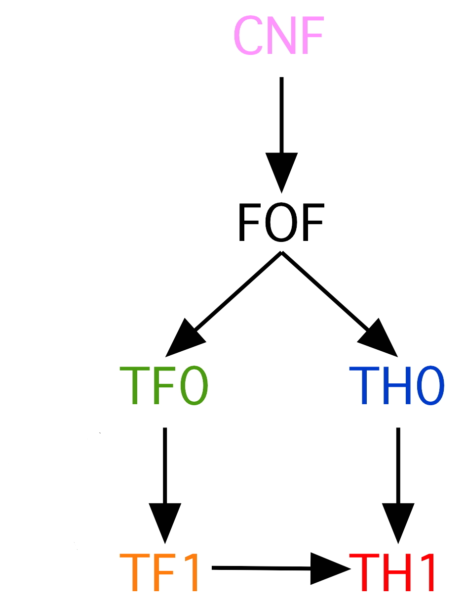

The TPTP Language Hierarchy

Years of Development
- 1993 - CNF: Clause Normal Form
- 1997 - FOF: First-order Form
- 2004 - New syntax, BNF, etc.
- 2009 - TH0: Monomorphic Typed Higher-order Form
- 2010 - TF0: Monomorphic Typed First-order Form
- 2013 - TF1: Polymorphic Typed First-order Form
- 2016 - TH1: Polymorphic Typed Higher-order Form
TFF (TF0 and TF1): Great, but ...
- Tuples a mess, confused with FOF
- Conditional and let expressions horribly formulated
TXF (Typed First-order eXtended)
- Flexible tuples of terms and formulae
- Elegant new conditional and let expressions
- Formulae and terms conflated as in FOOL logic (see next)